Setting up Social Challenges
Social challenges keep your players engaged by automatically sending push notifications whenever a player's best score is beat by someone in their network. It is currently available on iOS only.
Setup
To test social challenges in your app, you must send team@openkit.io the development push certificate that you created through the Apple Provisioning Portal. Follow these steps to obtain this certificate:
Browse to developer.apple.com/account and click on Identifiers:

From the list of App IDs, find the app that you would like to enable with push and click on it. Note, the App ID cannot have a wildcard (e.g. *) character in it. If you are currently using a wildcard App ID, please create a new App ID.
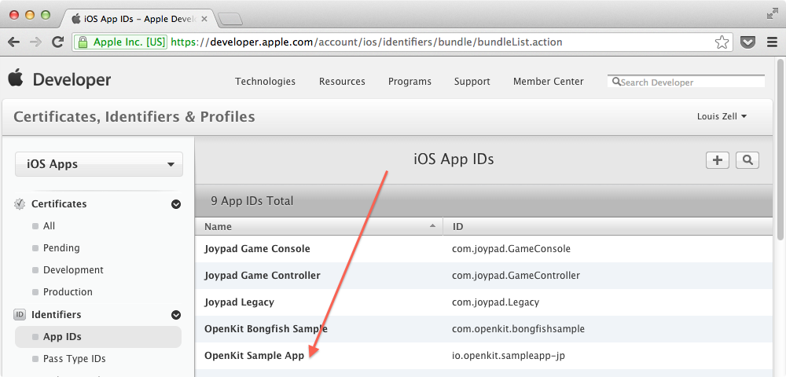When you tap on your App ID, the row will expand to reveal details on the app. Click Edit:
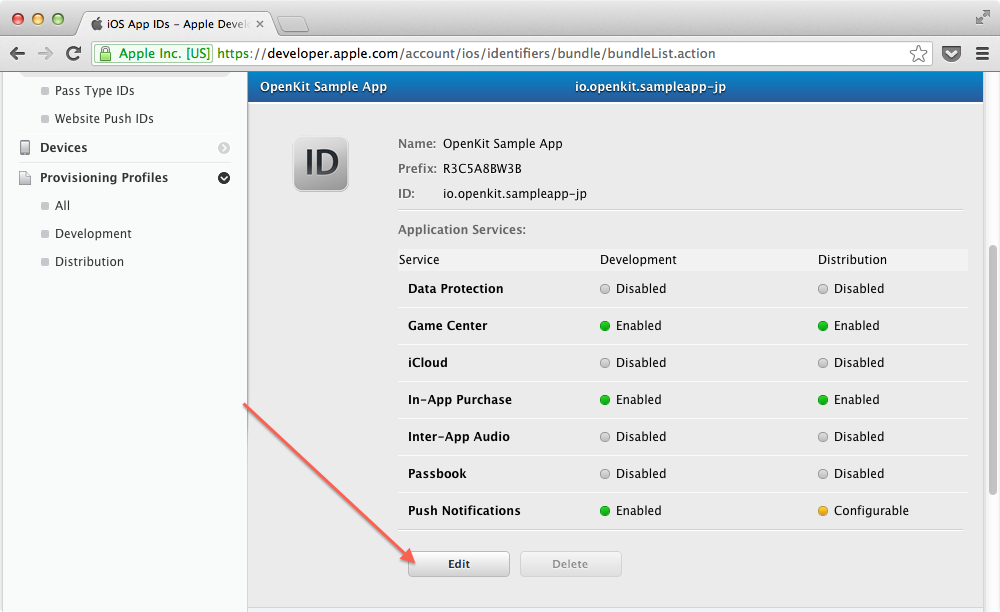Create the Development Certificate:
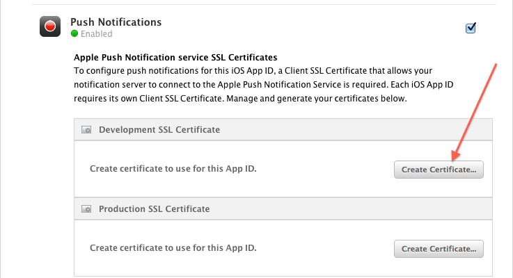You will be prompted to upload a certificate request file. Open Keychain and go to Keychain Access > Certificate Assistant > Request a Certificate From a Certificate Authority:
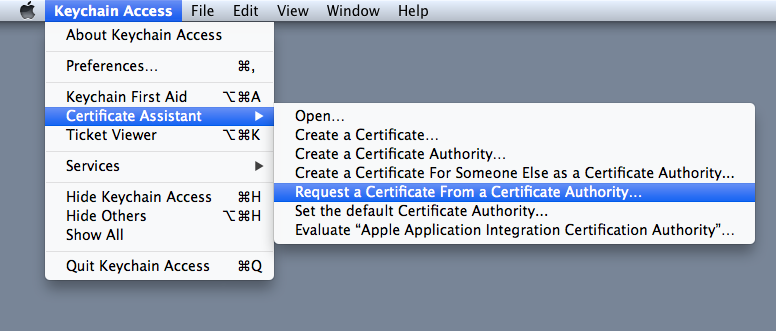Enter your information and select "Saved to disk":

Upload the certSigningRequest that you just saved:
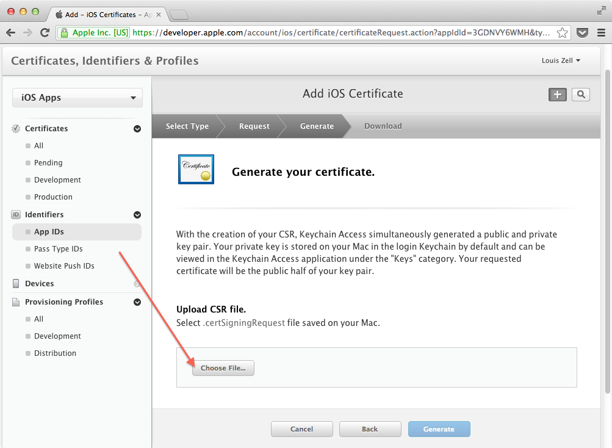Your certificate for push notifications in development is ready, download it:
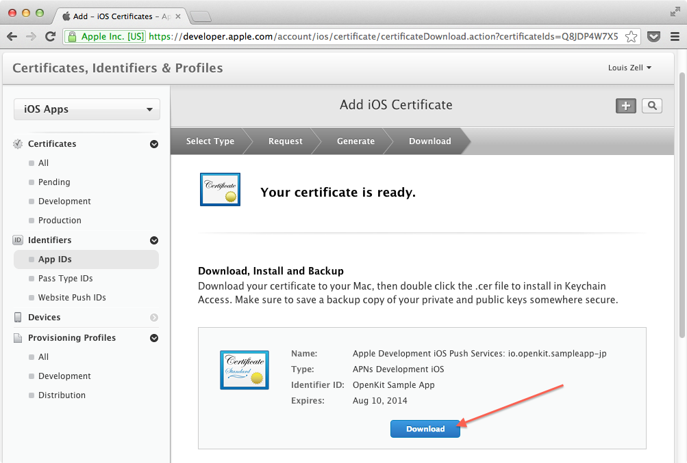Double click the downloaded cert. Keychain will open; right click on it and select "Export". Put a password on the .p12 file that your exporting:
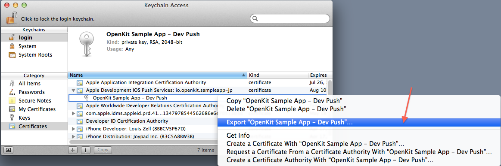Email the .p12 file to team@openkit.io. We will put your cert in place and communicate with you how to test out social challenges through our dashboard.
When you are testing push notifications in development, here are some things to watch for:
Make sure the bundle identifier of your app matches the App ID you created your push certificate for:
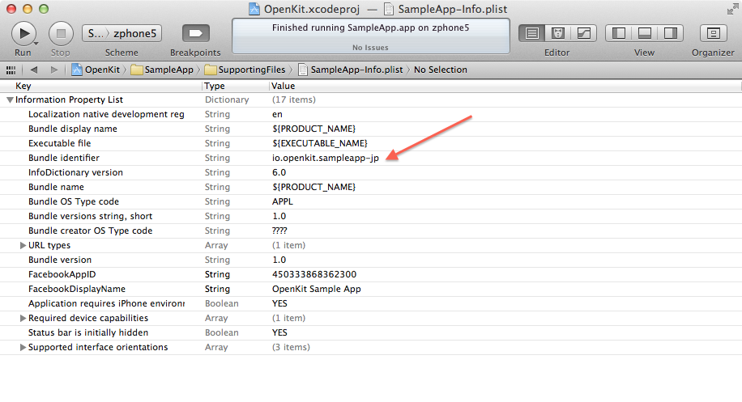Make sure the development provisioning profile that you are using does not contain a wildcard character. It should be the same as the AppID that you created your push certificate for:
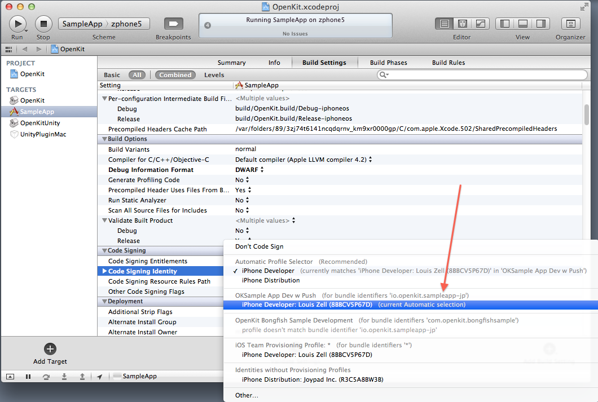If it does not match, here are the steps to create a new provisioning profile:
Browse to developer.apple.com/account, click Provisioning Profiles and click the plus sign to add a new profile:
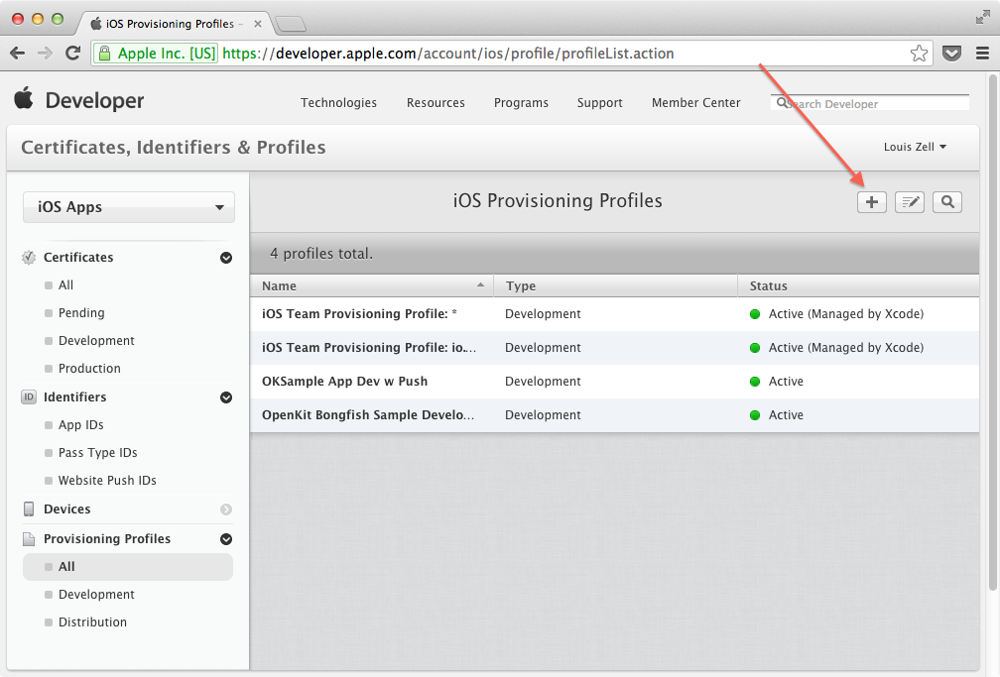Select the same App ID that you used to create your push certificate:
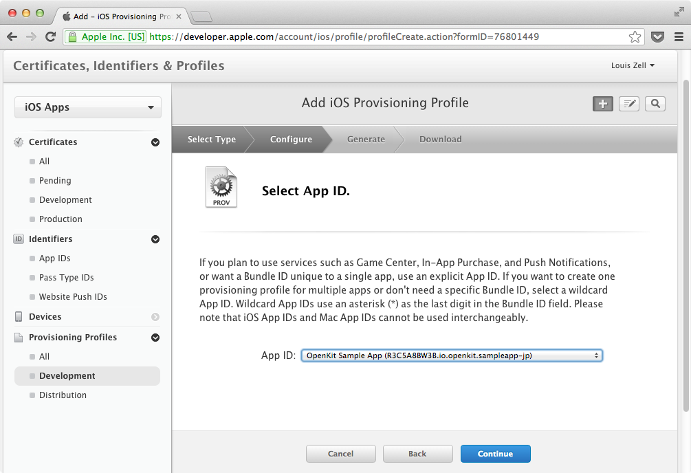When you have finished creating the provisioning profile, download it and double click it to add it to organizer.
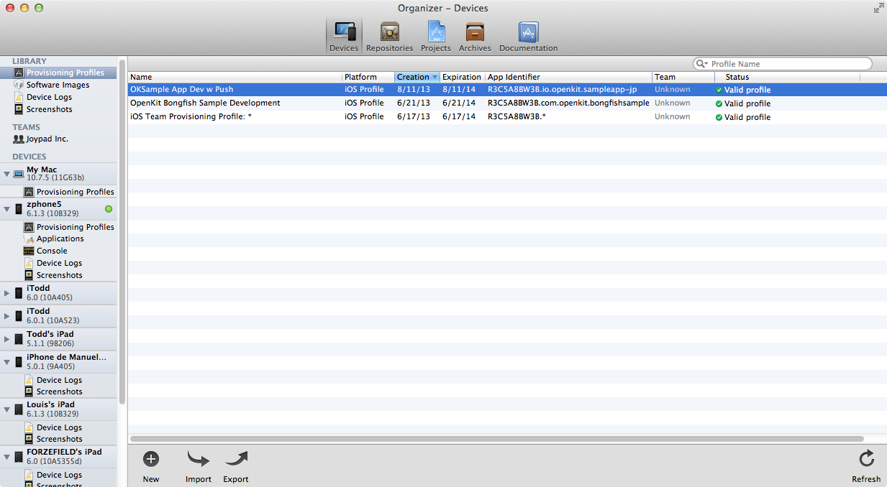Finally, make sure the newly downloaded provisioning profile is being used when you build your app in development:
These steps will be repeated to enable social push for production. Please email team@openkit.io before taking your game live with the social challenge update!